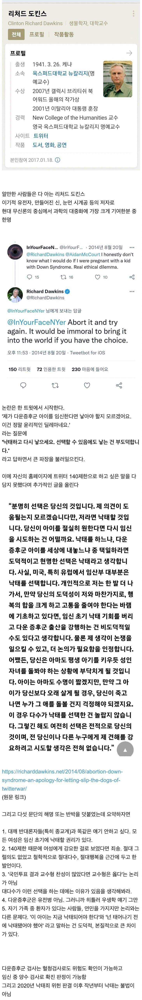

.

.
검사라는게 결국 확률이라
나중엔 이미 태아때부터 확인 다 될거니깐 걱정안하겟네
나도 지우는게 모두를 위한거라는 입장이었음
근데 막상 정밀검사 하는 12주 전이라도 2주에 한번씩 초음파 보면서
하루가 다르게 자라고 꼬물 거리는거 보면서 귀여워했었는데
만약에 장애 판정을 받았을때 없애겠다고 단호하게 말할 수 있을까 생각이 들더라
진짜 정밀검사하면서 마음 졸였는데 다행히 정상이어서 천만 다행이었지만 이제 지워야된다고 쉽게 말 못하겠음
NIPT 고위험 한번 뜨니까
머리속에 '?' 이생각 밖에 안뜨더라. 정밀검사 결과 나오는 일주일 내내.
애초에 낙태를 염두에 둔 검사니.. 우린 아예 안했음. 다행히 정상이었고..
자기 애면 이런 생각드는게 당연하지. 난 내 딸이 원치 않은 임신해도 내가 키워줄테니 웬만함 낳으라고 하고 싶음. 근데 남의 선택에 대해선 왈가왈부하는건 적절치 않다고 생각함.
나도 같은 생각.. 배우자랑 협의해서 장애아인 경우 낙태하자고 했었는데, 병원갈때마다 눈에 보이게 커가는거 보다 보니까 쉽게 못지울것 같단 생각이 들더라.
진짜 검사 하는데 혹~~시나 고위험이면 어쩌지 엄청 걱정됐었음ㅠ
걍 부모 선택을 존중하는게 답인것 같음
나도 그랬음. 물론 부모의 선택이지만, 막상 초음파보고 꼬물대는거 보면 ㄹㅇ 쉽지 않음. 다행히 울 딸래미 멀쩡히 잘 태어나서 지금 유치원 다님
아이를 가져본 사람 아니면 모를듯.
종교인들은 발작할 만한 이야기지만 저 냥반은 종교 까는 걸로 유명하니 뭐...
혹여나 부모가 먼저 세상을 떠나게됬을때 혼자 남겨질 자식을 생각하면..
가능하면 다시 가지는게 좋지
그럼 자연으로 수정되지 못하거나 수정되어도 착상되지 못하면 다 죽음으로 치나?
자신에게 유전병 인자가 있는데도 아이를 갖고 낳는 사람들의 책임에 대해서는 어떻게들 생각하는지....
다운증후군은 염색체 비분리로 생기는거라 거의 대부분 부모한테 뭐 유전인자가 있는 케이스가 아님
극히 일부만이 부모에게서 로버트슨 염색체 전위라는 특징적인 형질이 나타나는데 이건 핵형검사로 미리 검진이 가능하긴함
로버트슨 염색체 전위 같은 케이스가 아닌 이상에야 부모한테 인자가 있어서 그게 유전되는게 아닌거라 미리 알 수 없지
수정 이후에 알수있을뿐
유전병인자를 인지하고 있고 그게 충분한 치료방법이 있다면 무슨 상관 있겠냐만은.. 그렇지 않다면.. 근데.그렇다고해서 비난할 이유는 없다고 생각함.
본인의 삶을 통해 아이의 삶을 상상해보겠지
그게 너무 비참하고 힘든 삶이라면 아이를 가지기 두렵지 않을까
유전자는 어차피 100퍼센트 발현이 아님
필요한 유전자만 발현하고 나머지는 그냥 미발현으로 남음
다음세대에서 발현할지 안할지는 가봐야 아는거고
그래서 당장 유전병이 발현한 부모 한명이라고 하더라도 후대가 무조건 유전병이다 라고 보긴 힘듬 확률이 다른사람보다 높은거 뿐이지
그런걸로 따지게 되면 가계에 암환자가 있으면, 당뇨환자가 있으면 그것또한 유전영향이 크니 자식을 낳으면 안된다랑 동급임
내 아버지가 탈모라고해서 내 자식한테 100%가는것도 아니고... 자식 세대면 20년쯤 뒤인데 뭔가 새로운 치료 나오겠지
좀 차갑게 말해서 그렇지 틀린 말은 아니지 않나 논의가 필요함도 인정했고 물어봐서 말한거기도 하고
요즘들어 특히 느끼는 건데
같은 메세지라도 ‘어떻게’ 말을 전달하느냐가
의사소통의 전부인 것 같음 의외로
어떻게도 어떻게인데
받아들이는 사람도 사람 나름임
자신이 진짜 끝까지 책임질 수 있는 재산이 있으면 모를까
그게 아니라면 기다리고 있는건 진심으로 지옥임
비통한 일이겠지만 맞는말이야

이러니 T들이 적이 많지 ㅋㅋㅋㅋ
140자 제한이라고 쿨하게 할말하고 떠나불면 어케
140자 제한 없다고 길게 쓰면 그것 또한 제대로 안보고 욕함 욕할 놈은 뭘 해도 욕함
삐끗하면우생학인데
크리스퍼 크리스퍼~
무조건 낙태해야됨
한국이나 동양쪽에서 받아들이는 정도로 간과하면 안됨. 서양은 기독교적 가치관에서 자란 인본주위 혹은 인간중심주의식 사고를 가지고 있기 때문에 굉장히 수위가 높은 소리임
저사람은 선의로 말한거고 자식이라면 차마 그러기 힘든거고
돈걱정 없는사람이고 사랑이 너무 많으면 그래도 되는데 둘중 하나라도 빠지면 아이에게도 부모에게도 고통 뿐이겠지
구구절절맞는말뿐
낳으면 애도 힘들고 부모도 힘든데 임신초기에 미리 알았다면 낙태가 맞지
다운증후군은 낙태하세요 논리를 계속 확장하면 유대인은 낙태하세요가 되는건데
본인이 감수할 준비가 되어있지않다면 낙태하세요 이건 몰라도 그냥 낙태하세요는 좀 위험해
애도 고통이고 부모도 고통이라 난 낙태할듯
지인중에 다운 알고도 낳아서 기르는데 넘 힘들어보이더라. 물론 아이가 주는 행복이 있겠지만 다른 아이들과 다르니까.. 웃는데 얼굴이 어두워.
찬성
장애있는 애를 조기에 알수있으면 지우는게 맞다고 봄
주변에 장애 확정 판정 받았는데 안 지우고 낳은 부부가 있어서 저 말에 무조건 찬성은 못하겠음.
우리나라에서 그쪽으로 알아주는 의사 두 명이 다 장애 확정이라고 했는데 지금 멀쩡하게 중학교 잘 다니고 있음.
그 부부는 기독교였는데 장애 있어도 감수하고 낳아 키우겠다고 한 거 알고 뭔가 좀 다르게 보였음.